4. نموذج الإجراء
لنعد إلى بنية تطبيق ASP.NET MVC:
 |
في الفصل السابق، تناولنا العملية التي تنقل الطلب [1] إلى وحدة التحكم والإجراء [2a] اللذين سيقومان بمعالجته، وهي آلية تُسمى التوجيه. كما عرضنا الاستجابات المختلفة التي يمكن أن تقدمها الإجراء للمتصفح. وقد عرضنا حتى الآن إجراءات لا تستفيد من الطلب المقدم إليها. يحمل الطلب [1] معه معلومات متنوعة تقدمها ASP.NET وMVC إلى الإجراء في شكل نموذج. لا ينبغي الخلط بين هذا المصطلح ونموذج M لعرض V [2c] الذي تنتجه العملية:
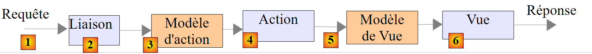 |
- يصل طلب العميل HTTP إلى [1]؛
- في [2]، سيتم تحويل المعلومات الموجودة في الطلب إلى نموذج الإجراء [3]، وهي فئة غالبًا ولكن ليس بالضرورة، ستُستخدم كمدخل للإجراء [4]؛
- في [4]، ستقوم الإجراء، انطلاقًا من هذا النموذج، بتوليد استجابة. وستتألف هذه الاستجابة من مكونين: عرض V [6] ونموذج M لهذا العرض [5]؛
- ستستخدم طريقة العرض V [6] نموذجها M [5] لتوليد الاستجابة HTTP الموجهة إلى العميل.
في النموذج MVC، تعد الإجراء [4] جزءًا من C (وحدة التحكم)، ونموذج العرض [5] هو M، والعرض [6] هو V.
يتناول هذا الفصل آليات الربط بين المعلومات التي تنقلها الطلبات، والتي هي بطبيعتها سلاسل أحرف، ونموذج الإجراء الذي يمكن أن يكون فئة ذات خصائص من أنواع مختلفة.
4.1. تهيئة معلمات الإجراء
نضيف [1] إلى الحل الحالي مشروعًا جديدًا ASP.NET MVC الأساسي:
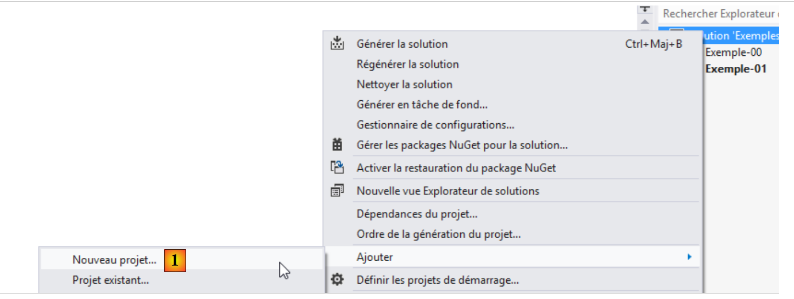 |
 |
- في [2]، اسم المشروع الجديد؛
- في [3, 4]، نختار مشروعًا أساسيًا ASP.NET MVC؛
- في [5]، المشروع الجديد.
سنجعل المشروع الجديد هو مشروع بدء الحل.
كما تم في الفقرة 3.1، نقوم بإنشاء وحدة تحكم باسم [First] [1]:
 |
في هذا المتحكم، سننشئ الإجراء [Action01] التالي:
using System.Web.Mvc;
namespace Exemple_02.Controllers
{
public class FirstController : Controller
{
// الإجراء01
public ContentResult Action01(string nom)
{
return Content(string.Format("Contrôleur=First, Action=Action01, nom={0}", nom));
}
}
}
يكمن الجديد في السطر 8: تحتوي الطريقة [Action01] على معلمة. سنركز في هذا الفصل على الطرق المختلفة لتهيئة معلمات الإجراء. يتم تهيئة المعلمة [nom] أعلاه بالترتيب بالقيم التالية:
Request.Form["nom"] | معلمة باسم [nom] مرسلة بواسطة أمر POST |
RouteData.Values["nom"] | عنصر من URL يسمى [nom] |
Request.QueryString["nom"] | معلمة باسم [nom] مرسلة بواسطة أمر GET |
Request.Files["nom"] | ملف تم تحميله باسم [nom] |
دعونا ندرس هذه الحالات المختلفة. لنطلب مباشرة في المتصفح URL [/First/Action01?nom=someone]. نحصل على الرد التالي:
 |
كان طلب المتصفح HTTP كما يلي:
- السطر 1: الطلب هو GET. يتضمن الطلب URL المعلمة [nom]. على جانب الخادم، يصل الطلب إلى الإجراء [Action01] الذي يحمل التوقيع التالي:
public ContentResult Action01(string nom)
لإعطاء قيمة للمعلمة "name"، يحاول ASP.NET MVC بالتتابع وبالترتيب القيم Request.Form["nom"]، RouteData.Values["nom"]، Request.QueryString["nom"]، Request.Files["nom"]. يتوقف بمجرد العثور على قيمة. تم وضع المعلمة [nom] المضمنة في URL من GET بواسطة إطار العمل في Request.QueryString["nom"]. سيتم تهيئة المعلمة [nom] في [Action01] باستخدام هذه القيمة [someone]. بعد ذلك، يتم تنفيذ كود [Action01]:
return Content(string.Format("Contrôleur=First, Action=Action01, nom={0}", nom), "text/plain", Encoding.UTF8);
يقدم هذا الرمز الرد المرسل إلى العميل:
 |
ملاحظة: آلية ربط المعلمات لا تميز بين الأحرف الكبيرة والصغيرة. لذا، إذا تم تعريف الإجراء الخاص بنا على النحو التالي:
public ContentResult Action01(string NOM)
وتم تمرير المعلمة [?NoM=zébulon]، فسيتم الربط بشكل صحيح. وستتلقى المعلمة [NOM] من [Action01] القيمة [zébulon].
الآن، لنطلب نفس URL مع POST. للقيام بذلك، نستخدم التطبيق [Advanced Rest Client]:
 |
- في [1]، URL المطلوب؛
- في [2]، سيتم استخدام الأمر POST؛
- في [3]، معلمات POST.
لنرسل هذا الطلب ونلقي نظرة على سجلات HTTP. الطلب HTTP هو كما يلي:
 |
- في [1]، POST؛
- في [2]، معلمات POST. من الناحية الفنية، تم إرسالها خلف رؤوس HTTP بعد السطر الفارغ الذي يشير إلى نهاية هذه الرؤوس؛
- في [3]، الرد الذي تم الحصول عليه. يتم استرداد المعلمة [nom] من POST بشكل صحيح. في القيم التي تم تجربتها للمعلمة اسم Request.Form["nom"]، RouteData.Values["nom"]، Request.QueryString["nom"]، Request.Files["nom"]، كان الأول هو الذي نجح.
الآن، لنقوم بتعديل المسار الافتراضي في [App_Start/RouteConfig]. حالياً، هذا المسار هو كما يلي:
routes.MapRoute(
name: "Default",
url: "{controller}/{action}/{id}",
defaults: new { controller = "Home", action = "Index", id = UrlParameter.Optional }
);
لنغيرها إلى:
routes.MapRoute(
name: "Default",
url: "{controller}/{action}/{nom}",
defaults: new { controller = "Home", action = "Index", nom = UrlParameter.Optional }
);
- في السطر 3، قمنا بتسمية [nom] كالعنصر الثالث في مسار؛
- السطر 4، تم تعريف هذا العنصر على أنه اختياري.
الآن، لنعيد تجميع التطبيق ونطلب URL [/First/Action01/zébulon] مباشرة في المتصفح. نحصل على الرد التالي:
 |
في القيم التي تم تجربتها للمعلمة اسم Request.Form["nom"]، RouteData.Values["nom"]، Request.QueryString["nom"]، Request.Files["nom"]، كان الخيار الثاني هو الذي نجح.
لنقم بنفس الاستعلام باستخدام POST و [Advanced Rest Client]:
 |
- في [1]، أعطينا قيمة لعنصر {name} في المسار؛
- في [2]، نضيف معلمة [nom] إلى الطلب المرسل؛
- الرد الذي تم الحصول عليه هو في [3].
في القيم التي تم تجربتها للمعلمة [nom] Request.Form["nom"]، RouteData.Values["nom"]، Request.QueryString["nom"]، Request.Files["nom"]، كانت اثنتان مناسبتان، وهما الأوليان. وقد تم استخدام الأولى.
4.2. التحقق من صحة معلمات الإجراء
إذا كان للإجراء معلمة باسم [p]، فستحاول ASP.NET MVC تعيين إحدى القيم التالية لها: Request.Form["p"]، RouteData.Values["p"]، Request.QueryString["p"]، Request.Files["p"]. القيم الثلاث الأولى هي سلاسل أحرف. إذا لم يكن المعلمة [p] من النوع [string]، فقد تحدث مشاكل.
لنقم بإنشاء الإجراء الجديد التالي:
// الإجراء 02
public ContentResult Action02(int age)
{
string texte = string.Format("Contrôleur={0}, Action={1}, âge={2}", RouteData.Values["controller"], RouteData.Values["action"],age);
return Content(texte, "text/plain", Encoding.UTF8);
}
- السطر 2، تقبل الإجراء [Action02] معلمة باسم [age] من النوع int. يجب أن تكون سلسلة الأحرف المستردة قابلة للتحويل إلى int.
لنطلب URL [http://localhost:55483/First/Action02?age=21]. نحصل على الصفحة التالية:
 |
لنطلب URL [http://localhost:55483/First/Action02?age=21x]. نحصل على الصفحة التالية:
 |
هذه المرة، حصلنا على صفحة خطأ. من المثير للاهتمام إلقاء نظرة على رؤوس HTTP المرسلة من الخادم في هذه الحالة:
- السطر 1: رد الخادم برمز [500 Internal Server Error] وأرسل صفحة HTML (السطر 3) بحجم 12438 بايت (السطر 5) لشرح الأسباب المحتملة لهذا الخطأ.
لنقم الآن بإنشاء الإجراء [Action03] التالي:
// الإجراء 03
public ContentResult Action03(int? age)
{
...
}
[Action03] مطابق لـ [Action02] باستثناء أننا قمنا بتغيير نوع المعلمة [age] إلى int?، مما يعني عدد صحيح أو null.
لنطلب URL [http://localhost:55483/First/Action03?age=21x]. نحصل على الصفحة التالية:
 |
ASP.NET لم ينجح MVC في تحويل [21x] إلى نوع int. ثم قام بتعيين القيمة null للمعلمة [age] كما يسمح بذلك نوعها int?. ومع ذلك، من الممكن معرفة ما إذا كان المعامل قد تلقى قيمة من الاستعلام أم لا.
نقوم بإنشاء الإجراء الجديد [Action04] التالي:
// الإجراء 04
public ContentResult Action04(int? age)
{
bool valide = ModelState.IsValid;
string texte = string.Format("Contrôleur={0}, Action={1}, âge={2}, valide={3}", RouteData.Values["controller"], RouteData.Values["action"], age, valide);
return Content(texte, "text/plain", Encoding.UTF8);
}
- السطر 2: تم الاحتفاظ بنوع [int?]. وهذا يسمح بشكل خاص لطلب الاستعلام بعدم توفير المعلمة [age] التي تتلقى عندئذ القيمة null؛
- السطر 4: يتم اختبار صحة نموذج الإجراء. يتكون نموذج الإجراء من مجموعة معلماته، وهي هنا [age]. يكون النموذج صحيحًا إذا تمكنت جميع المعلمات من الحصول على قيمة من الطلب أو القيمة null إذا كان نوع المعلمة يسمح بذلك؛
- السطر 5: نضيف قيمة المتغير [valide] إلى النص المرسل إلى العميل.
لنطلب URL [http://localhost:55483/First/Action04?age=21x]. نحصل على الصفحة التالية:
 |
ASP.NET لم ينجح MVC في تحويل [21x] إلى نوع int. ثم قام بتعيين القيمة null للمعلمة [age] كما يسمح نوعها int؟. ولكن حدثت أخطاء في التحويل كما تظهر قيمة [valide].
من الممكن ظهور رسالة خطأ مرتبطة بفشل التحويل. لنلقِ نظرة على الإجراء الجديد التالي:
// الإجراء 05
public ContentResult Action05(int? age)
{
string erreurs = getErrorMessagesFor(ModelState);
string texte = string.Format("Contrôleur={0}, Action={1}, âge={2}, valide={3}, erreurs={4}", RouteData.Values["controller"], RouteData.Values["action"], age, ModelState.IsValid, erreurs);
return Content(texte, "text/plain", Encoding.UTF8);
}
الجديد هو السطر 4. حيث يتم استدعاء طريقة خاصة [getErrorMessagesFor] يتم تمرير حالة نموذج الإجراء إليها. وهي تُرجع سلسلة أحرف تجمع رسائل جميع الأخطاء التي حدثت. هذه الطريقة هي التالية:
private string getErrorMessagesFor(ModelStateDictionary état)
{
List<String> erreurs = new List<String>();
string messages = string.Empty;
if (!état.IsValid)
{
foreach (ModelState modelState in état.Values)
{
foreach (ModelError error in modelState.Errors)
{
erreurs.Add(getErrorMessageFor(error));
}
}
foreach (string message in erreurs)
{
messages += string.Format("[{0}]", message);
}
}
return messages;
}
- السطر 1: المعلمة الفعلية [ModelState] التي تم تمريرها إلى الأسلوب هي من النوع [ModelStateDictionary]؛
- السطر 3: قائمة برسائل الأخطاء، فارغة في البداية؛
- السطر 5: يتم اختبار ما إذا كانت الحالة التي تم تمريرها كمعلمة صالحة أم لا. إذا لم تكن صالحة، فسيتم تجميع جميع رسائل الخطأ في سلسلة أحرف واحدة؛
- السطر 7: النوع [ModelStateDictionary] له خاصية [Values] وهي مجموعة من الأنواع [ModelState]. يوجد [ModelState] لكل عنصر في النموذج. على سبيل المثال:
- ModelState["age"]: حالة نموذج الإجراء للمعلمة [age]،
- ModelState["age"].Errors: مجموعة الأخطاء لهذا المعامل. تكون الأخطاء من النوع [ModelError]،
- ModelState["age"].Errors[i].ErrorMessage: رسالة الخطأ المحتملة رقم i للمعلمة [age] في النموذج
- ModelState["age"].Errors[i].Exception: استثناء الخطأ رقم i من مجموعة الأخطاء في المعلمة [age]،
- ModelState["age"].Errors[i].Exception.InnerException: سبب هذا الاستثناء،
- ModelState["age"].Errors[i].Exception.InnerException.Message: رسالة سبب الاستثناء؛
- السطر 9: يتم تصفح المجموعة [Errors] لـ [ModelState] معين؛
- السطر 11: يتم استرداد رسالة الخطأ من [ModelError] معين وإضافتها إلى قائمة رسائل الخطأ في السطر 3؛
- الأسطر 14-17: يتم تجميع عناصر قائمة رسائل الخطأ في سلسلة أحرف واحدة.
الطريقة [getErrorMessageFor] في السطر 11 هي كما يلي:
private string getErrorMessageFor(ModelError error)
{
if (error.ErrorMessage != null && error.ErrorMessage.Trim() != string.Empty)
{
return error.ErrorMessage;
}
if (error.Exception != null && error.Exception.InnerException == null && error.Exception.Message != string.Empty)
{
return error.Exception.Message;
}
if (error.Exception != null && error.Exception.InnerException != null && error.Exception.InnerException.Message != string.Empty)
{
return error.Exception.InnerException.Message;
}
return string.Empty;
}
- السطر 1: يتم استلام نوع [ModelError] الذي يغلف خطأً في أحد عناصر نموذج الإجراء. يتم البحث عن رسالة الخطأ في ثلاثة أماكن مختلفة:
- في [ModelError].ErrorMessage، الأسطر 3-6؛
- في [ModelError].Exception.Message، الأسطر 7-10؛
- في [ModelError].Exception.InnerException.Message، الأسطر 11-14؛
أثناء الاختبارات، نلاحظ أن رسالة الخطأ موجودة في هذه الأماكن الثلاثة حسب طبيعة عنصر النموذج. لا بد أن هناك قاعدة تسمح بالحصول بالتأكيد على رسالة الخطأ المرتبطة بعنصر من النموذج، لكنني لا أعرفها. لذا أبحث عنها في الأماكن المختلفة التي يمكنني العثور عليها فيها وبترتيب معين. بمجرد العثور على رسالة غير فارغة، يتم إرجاعها.
لنطلب URL [http://localhost:55483/First/Action05?age=21x]. نحصل على الصفحة التالية:
 |
4.3. عملية ذات معلمات متعددة
لننظر إلى الإجراء الجديد التالي:
// الإجراء 06
public ContentResult Action06(double? poids, int? age)
{
string erreurs = getErrorMessagesFor(ModelState);
string texte = string.Format("Contrôleur={0}, Action={1}, poids={2}, âge={3}, valide={4}, erreurs={5}", RouteData.Values["controller"], RouteData.Values["action"], poids, age, ModelState.IsValid, erreurs);
return Content(texte, "text/plain", Encoding.UTF8);
}
- السطر 2: لدينا معلمتان [poids] و [age].
تنطبق القواعد الموضحة سابقًا الآن على المعلمتين. فيما يلي بعض أمثلة التنفيذ:
 |
 |
4.4. استخدام فئة كنموذج لإجراء
لنحدد فئة ستكون نموذجًا لإجراء. نضعها في المجلد [Models] [1].
 |
سيكون كودها كما يلي:
namespace Exemple_02.Models
{
public class ActionModel01
{
public double? Poids { get; set; }
public int? Age { get; set; }
}
}
تحتوي فئتنا على الخاصيتين التلقائيتين، المعلمتين [Poids] و [Age] اللتين درسناهما سابقًا. ستكون هذه الفئة معلمة الإدخال للإجراء [Action07]:
// الإجراء 07
public ContentResult Action07(ActionModel01 modèle)
{
string erreurs = getErrorMessagesFor(ModelState);
string texte = string.Format("Contrôleur={0}, Action={1}, poids={2}, âge={3}, valide={4}, erreurs={5}", RouteData.Values["controller"], RouteData.Values["action"], modèle.Poids, modèle.Age, ModelState.IsValid, erreurs);
return Content(texte, "text/plain", Encoding.UTF8);
}
- السطر 2: نموذج الإجراء هو مثيل من النوع [ActionModel01].
لنستعرض نفس المثالين السابقين:
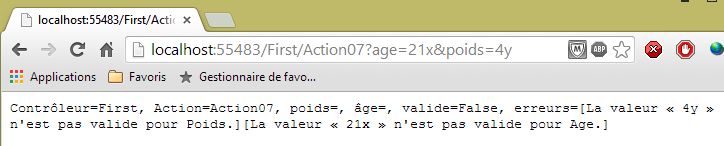 |
 |
يُلاحظ أن ربط المعلمات لا يراعي أحرف كبيرة وصغيرة. كانت معلمات الاستعلام هي [age] و [poids]. وقد غذت هذه المعلمات الخصائص [Age] و [Poids] للفئة [ModelAction01].
من ناحية أخرى، استخدمنا حتى الآن الاستعلامات HTTP و [GET]. دعونا نوضح أن الاستعلامات [POST] لها نفس السلوك. وللقيام بذلك، سنستخدم مرة أخرى التطبيق [Advanced Rest Client]:
 |
- في [1]، URL المطلوب؛
- في [2]، سيتم طلبها بواسطة أمر POST؛
- في [3]، معلمات POST.
نحصل على نفس الإجابة كما في GET:

4.5. نموذج الإجراء مع قيود الصلاحية - 1
مع النموذج السابق:
namespace Exemple_02.Models
{
public class ActionModel01
{
public double? Poids { get; set; }
public int? Age { get; set; }
}
}
قد لا تظهر المعلمات [poids] و [age] في الاستعلام. في هذه الحالة، تتلقى الخصائص [Poids] و [Age] القيمة [null] ولا يتم الإبلاغ عن أي خطأ. قد نرغب في تحويل النموذج على النحو التالي:
namespace Exemple_02.Models
{
public class ActionModel01
{
public double Poids { get; set; }
public int Age { get; set; }
}
}
في السطرين 5 و6، لم يعد بإمكان الخصائص [Poids] و[Age] أن تأخذ القيمة [null]. لنرى ما يحدث مع هذا النموذج الجديد عندما تكون المعلمات [poids] و [age] غائبتين عن الاستعلام.
 |
لم تحدث أخطاء واحتفظت الخصائص [Poids] و [Age] بقيمة التهيئة: 0. ASP.NET MVC:
- أنشأ مثيلًا للنموذج بواسطة new ActionModel01. وهنا حصلت الخصائص [Poids] و [Age] على القيمة 0؛
- لم يُعيّن أي قيمة لهاتين الخاصيتين لأنه لم يكن هناك أي معلمة تحمل اسميهما.
يسمح لنا النموذج الأول بالتحقق من عدم وجود معلمة: عندئذٍ تكون قيمة الخاصية المقابلة هي [null]. أما النموذج الثاني فلا يسمح لنا بذلك. من الممكن إضافة قيود تحقق أخرى بخلاف النوع البسيط للمعلمات. سنقوم الآن بعرضها.
لننظر إلى نموذج الإجراء الجديد التالي:
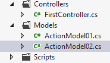 |
using System.ComponentModel.DataAnnotations;
namespace Exemple_02.Models
{
public class ActionModel02
{
[Required]
[Range(1, 200)]
public double? Poids { get; set; }
[Required]
[Range(1, 150)]
public int? Age { get; set; }
}
}
- السطر 6: يشير إلى أن الحقل [Poids] مطلوب؛
- السطر 7: يشير إلى أن الحقل [Poids] يجب أن يكون ضمن النطاق [1,200]؛
- السطر 9: يشير إلى أن الحقل [Age] مطلوب؛
- السطر 7: يشير إلى أن الحقل [Age] يجب أن يكون ضمن النطاق [1,150]؛
ستكون الإجراء الذي يستخدم هذا النموذج هو الإجراء [Action08] التالي:
// الإجراء 08
public ContentResult Action08(ActionModel02 modèle)
{
string erreurs = getErrorMessagesFor(ModelState);
string texte = string.Format("Contrôleur={0}, Action={1}, poids={2}, âge={3}, valide={4}, erreurs={5}", RouteData.Values["controller"], RouteData.Values["action"], modèle.Poids, modèle.Age, ModelState.IsValid, erreurs);
return Content(texte, "text/plain", Encoding.UTF8);
}
- السطر 2: تتلقى الإجراء مثيلًا من النموذج [ActionModel02]؛
لنقم ببعض الاختبارات:
 |
 |
 |
 |
تم الكشف عن الأخطاء بشكل صحيح. الآن، دعونا نطور النموذج على النحو التالي:
using System.ComponentModel.DataAnnotations;
namespace Exemple_02.Models
{
public class ActionModel02
{
[Required]
[Range(1, 200)]
public double Poids { get; set; }
[Required]
[Range(1, 150)]
public int Age { get; set; }
}
}
في السطرين 8 و 11، لم يعد من الممكن أن تأخذ الخصائص القيمة [null]. لنقوم بالتحويل البرمجي ونعيد إجراء الاختبار بدون معلمات:
 |
أدى عدم وجود معلمات إلى احتفاظ الخصائص [Poids] و [Age] بالقيمة التي اكتسبتها عند إنشاء مثيل النموذج: 0. ثم يتم التحقق من الصحة. عندئذٍ يتم استيفاء السمة [Required]. نلاحظ أن رسالة الخطأ أعلاه تتعلق بالسمة [Range]. لذا، للتحقق من وجود معلمة، يجب أن تكون الخاصية المرتبطة هي nullable، أي أن تكون قادرة على استلام القيمة null.
لنعد إلى النموذج الأولي [ActionModel02] ونفكر في إجراء يتكون نموذجه من مثيل [ActionModel02] ونوع [DateTime] nullable:
// الإجراء 09
public ContentResult Action09(ActionModel02 modèle, DateTime? date)
{
string erreurs = getErrorMessagesFor(ModelState);
string texte = string.Format("Contrôleur={0}, Action={1}, poids={2}, âge={3}, date={4}, valide={5}, erreurs={6}", RouteData.Values["controller"], RouteData.Values["action"], modèle.Poids, modèle.Age, date, ModelState.IsValid, erreurs);
return Content(texte, "text/plain", Encoding.UTF8);
}
لنقم ببعض الاختبارات:
 |
لم يتم تمرير أي معلمات إلى الإجراء. قامت سمات [Required] الخاصة بخصائص [Poids] و [Age] بدورها. أما التاريخ، فقد تلقى القيمة null ولم يتم الإبلاغ عن أي خطأ.
ننتقل الآن إلى المعلمات غير الصالحة:
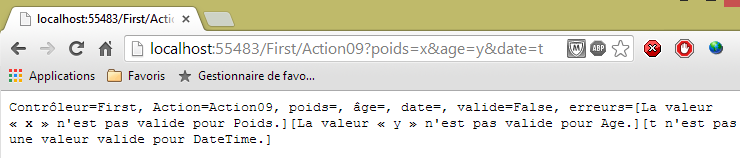 |
نقوم الآن بتمرير قيم صالحة:
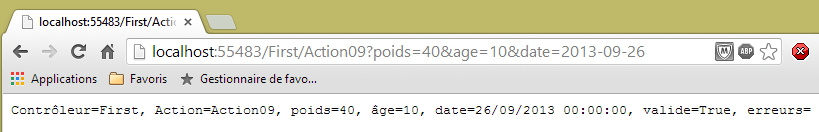 |
دعونا ندرس قيود صحة أخرى. نموذج الإجراء الجديد هو كما يلي:
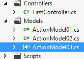 |
using System.ComponentModel.DataAnnotations;
namespace Exemple_02.Models
{
public class ActionModel03
{
[Required(ErrorMessage = "Le paramètre email est requis")]
[EmailAddress(ErrorMessage = "Le paramètre email n'a pas un format valide")]
public string Email { get; set; }
[Required(ErrorMessage = "Le paramètre jour est requis")]
[RegularExpression(@"^\d{1,2}$", ErrorMessage = "Le paramètre jour doit avoir 1 ou 2 chiffres")]
public string Jour { get; set; }
[Required(ErrorMessage = "Le paramètre info1 est requis")]
[MaxLength(4, ErrorMessage = "Le paramètre info1 ne peut avoir plus de 4 caractères")]
public string Info1 { get; set; }
[Required(ErrorMessage = "Le paramètre info2 est requis")]
[MinLength(2, ErrorMessage = "Le paramètre info2 ne peut avoir moins de 2 caractères")]
public string Info2 { get; set; }
[Required(ErrorMessage = "Le paramètre info3 est requis")]
[MinLength(4, ErrorMessage = "Le paramètre info3 doit avoir 4 caractères exactement")]
[MaxLength(4, ErrorMessage = "Le paramètre info3 doit avoir 4 caractères exactement")]
public string Info3 { get; set; }
}
}
- السطر 6: السمة [Required] مع رسالة خطأ هذه المرة نحددها بأنفسنا؛
- السطر 7: السمة [EMailAddress] تطلب أن يحتوي الحقل [Email] على عنوان بريد إلكتروني بصيغة صالحة؛
- السطر 11: يطلب السمة [RegularExpression] أن يحتوي الحقل [Jour] على سلسلة مكونة من رقم واحد أو رقمين. المعلمة الأولى هي التعبير العادي الذي يجب أن يتحقق منه الحقل؛
- السطر 15: يطلب السمة [MaxLength] أن يحتوي الحقل [Info1] على 4 أحرف كحد أقصى؛
- السطر 19: يطلب السمة [MinLength] أن يحتوي الحقل [Info2] على حرفين على الأقل؛
- السطران 23-24: يطلب السمتان [MaxLength] و [MinLength] معًا أن يحتوي الحقل [Info3] على 4 أحرف بالضبط؛
ستستخدم الإجراء [Action10] هذا النموذج:
// الإجراء 10
public ContentResult Action10(ActionModel03 modèle)
{
string erreurs = getErrorMessagesFor(ModelState);
string texte = string.Format("email={0}, jour={1}, info1={2}, info2={3}, info3={4}, erreurs={5}",
modèle.Email, modèle.Jour, modèle.Info1, modèle.Info2, modèle.Info3, erreurs);
return Content(texte, "text/plain", Encoding.UTF8);
}
لنقم بإجراء بعض الاختبارات باستخدام هذا الإجراء.
أولاً بدون معلمات:
 |
ثم مع معلمات غير صالحة:
 |
ثم باستخدام معلمات صالحة:
 |
4.6. نموذج الإجراء مع قيود الصلاحية - 2
نقدم قيودًا أخرى على السلامة. سيكون النموذج الجديد للإجراء هو الفئة [ActionModel04] التالية:
 |
using System.ComponentModel.DataAnnotations;
namespace Exemple_02.Models
{
public class ActionModel04
{
[Required(ErrorMessage="Le paramètre url est requis")]
[Url(ErrorMessage="URL invalide")]
public string Url { get; set; }
[Required(ErrorMessage = "Le paramètre info1 est requis")]
public string Info1 { get; set; }
[Required(ErrorMessage = "Le paramètre info2 est requis")]
[Compare("Info1",ErrorMessage="Les paramètres info1 et info2 doivent être identiques")]
public string Info2 { get; set; }
[Required(ErrorMessage = "Le paramètre cc est requis")]
[CreditCard(ErrorMessage = "Le paramètre cc n'est pas un n° de carte de crédit valide")]
public string Cc { get; set; }
}
}
- السطر 8: يطلب أن يكون الحقل المُعلَّق عليه حقل URL صالحًا؛
- السطر 13: يطلب أن تكون الخصائص [Info1] و [Info2] لها نفس القيمة؛
- السطر 16: يطلب أن يكون الحقل المُعلَّم رقم بطاقة ائتمان صالحًا.
ستكون الإجراء الذي يستخدم هذا النموذج كما يلي:
// الإجراء 11
public ContentResult Action11(ActionModel04 modèle)
{
string erreurs = getErrorMessagesFor(ModelState);
string texte = string.Format("URL={0}, Info1={1}, Info2={2}, CC={3},erreurs={4}",
modèle.Url, modèle.Info1, modèle.Info2, modèle.Cc, erreurs);
return Content(texte, "text/plain", Encoding.UTF8);
}
لاختبار الإجراء [Action11]، نستخدم التطبيق [Advanced Rest Client]:
 |
- في [1]، URL من الإجراء [Action11]؛
- في [2]، سيُطلب هذا URL مع POST؛
- في [3]، يتم تحديد علامة التبويب [Form]؛
- في [4]، قيم المعلمات الأربعة المتوقعة. هذه التهيئة هي ميزة يوفرها [ARC]. يمكن رؤية المعلمات المرسلة فعليًا في علامة التبويب [Raw] [5]؛
 |
- في [6]، معلمات POST.
بالنسبة لهذا الاستعلام، يتم تلقي الرد التالي:
 |
لنمرر معلمات غير صالحة:
 |
نحصل عندئذٍ على الرد التالي:
4.7. نموذج الإجراء مع قيود الصحة - 3
في بعض الأحيان، لا تكفي قيود السلامة المتاحة. يمكننا عندئذٍ إنشاء قيود خاصة بنا. يمكننا على وجه الخصوص استخدام نموذج يطبق واجهة [IValidatableObject]. في هذه الحالة، نضيف عمليات التحقق الخاصة بنا من النموذج في طريقة [Validate] لهذه الواجهة. لنرى مثالاً. سيكون النموذج الجديد للإجراء هو الفئة [ActionModel05] التالية:
 |
using System.Collections.Generic;
using System.ComponentModel.DataAnnotations;
namespace Exemple_02.Models
{
public class ActionModel05 : IValidatableObject
{
[Required(ErrorMessage = "Le paramètre taux est requis")]
public double? Taux { get; set; }
public IEnumerable<ValidationResult> Validate(ValidationContext validationContext)
{
List<ValidationResult> résultats = new List<ValidationResult>();
bool ok = Taux < 4.2 || Taux > 6.7;
if (!ok)
{
résultats.Add(new ValidationResult("Le paramètre taux doit être < 4.2 ou > 6.7", new string[] { "Taux" }));
}
return résultats;
}
}
}
- السطر 6: ينفذ النموذج واجهة [IValidatableObject]؛
- السطر 10: الطريقة [Validate] لهذه الواجهة. وهي تُرجع مجموعة من العناصر من النوع [ValidationResult]. هذا النوع يغلف الأخطاء التي نريد الإبلاغ عنها؛
- السطر 9: المعدل الصالح هو المعدل <4.2 أو > 6.7؛
- السطر 12: يتم إنشاء قائمة فارغة من العناصر من النوع [ValidationResult]؛
- السطر 13: يتم التحقق من صحة الخاصية [Taux]؛
- السطور 14-17: إذا كانت الخاصية [Taux] غير صالحة، يتم إضافة عنصر من النوع [ValidationResult] إلى قائمة النتائج. المعلمة الأولى هي رسالة خطأ. المعلمة الثانية، الاختيارية، هي مجموعة من الخصائص المتعلقة بهذا الخطأ.
ستكون الإجراء الذي يستخدم هذا النموذج كما يلي:
// الإجراء 12
public ContentResult Action12(ActionModel05 modèle)
{
string erreurs = getErrorMessagesFor(ModelState);
string texte = string.Format("taux={0}, erreurs={1}", modèle.Taux, erreurs);
return Content(texte, "text/plain", Encoding.UTF8);
}
فيما يلي مثال على التنفيذ:
 |
4.8. نموذج إجراء من نوع جدول أو قائمة
لنأخذ الإجراء [Action13] التالي:
// الإجراء 13
public ContentResult Action13(string[] data)
{
string strData = "";
if (data != null && data.Length != 0)
{
strData = string.Join(",", data);
}
string texte = string.Format("data=[{0}]", strData);
return Content(texte, "text/plain", Encoding.UTF8);
}
- السطر 2: يتكون نموذج الإجراء من جدول [string]. وهو يسمح لنا باسترداد معلمة تسمى [data] والتي يمكن أن تظهر عدة مرات في معلمات الاستعلام كما في [?data=data1&data=data2&data=data3]. ستغذي المعلمات المختلفة [data] للطلب المصفوفة [data] لنموذج الإجراء. تحدث هذه الحالة مع قوائم الاختيار المتعدد. يقوم المتصفح عندئذ بإرسال القيم المختلفة التي اختارها المستخدم، مع نفس اسم المعلمة.
فيما يلي مثال:
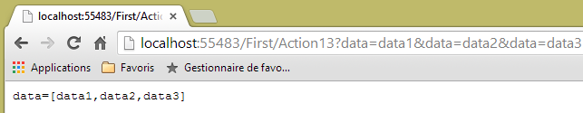 |
يمكن أن يكون النموذج أيضًا قائمة:
// الإجراء 14
public ContentResult Action14(List<int> data)
{
string erreurs = getErrorMessagesFor(ModelState);
string strData = "";
if (data != null && data.Count != 0)
{
strData = string.Join(",", data);
}
string texte = string.Format("data=[{0}], erreurs=[{1}]", strData, erreurs);
return Content(texte, "text/plain", Encoding.UTF8);
}
القالب هنا هو قائمة من الأعداد الصحيحة (السطر 2). إليك التنفيذ الأول:
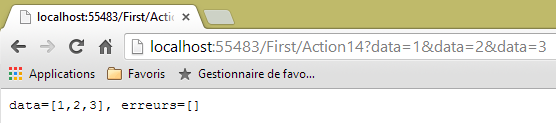 |
والثاني:
 |
4.9. تصفية نموذج الإجراء
في بعض الأحيان يكون لدينا نموذج ولكننا نرغب في أن يتم تهيئة عناصر معينة فقط من النموذج بواسطة الاستعلام HTTP. لنفترض نموذج الإجراء [ActionModel06] التالي:
using System.ComponentModel.DataAnnotations;
using System.Web.Mvc;
namespace Exemple_02.Models
{
[Bind(Exclude = "Info2")]
public class ActionModel06
{
[Required(ErrorMessage = "Le paramètre [info1] est requis")]
public string Info1 { get; set; }
public string Info2 { get; set; }
}
}
- السطران 9-10: المعلمة [info1] إلزامية؛
- السطر 6: يتم استبعاد المعلمة [info2] الموجودة في السطر 12 من ربط الطلب HTTP بنموذجه.
ستكون الإجراء كما يلي [Action15]:
// الإجراء 15
public ContentResult Action15(ActionModel06 modèle)
{
string erreurs = getErrorMessagesFor(ModelState);
string texte = string.Format("valide={0}, info1={1}, info2={2}, erreurs={3}", ModelState.IsValid, modèle.Info1, modèle.Info2, erreurs);
return Content(texte, "text/plain", Encoding.UTF8);
}
فيما يلي مثال على التنفيذ:
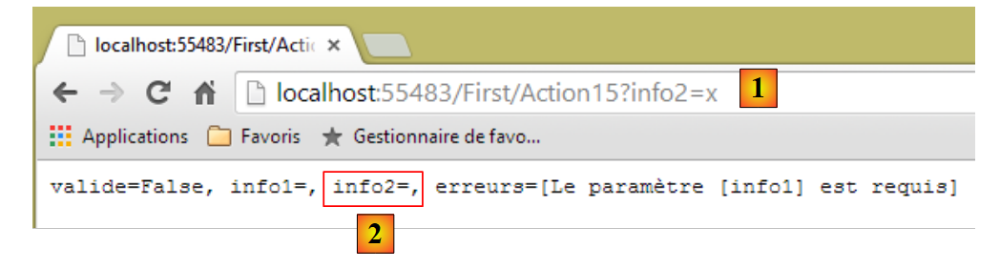 |
- في [1]: يتم تمرير المعلمة [info2] إلى URL؛
- في [2]: بقيت الخاصية [Info2] لنموذج الإجراء فارغة.
4.10. توسيع نموذج ربط البيانات
لنعد إلى بنية تنفيذ الإجراء:
 |
يتم إنشاء مثيل لفئة الإجراء في بداية طلب العميل ويتم إتلافه في نهايته. لذلك لا يمكن استخدامه لتخزين البيانات بين طلبين حتى لو تم استدعاؤه بشكل متكرر. قد نرغب في تخزين نوعين من البيانات:
- البيانات المشتركة بين جميع مستخدمي تطبيق الويب. وعادةً ما تكون هذه البيانات للقراءة فقط. يتم استخدام ثلاثة ملفات لتنفيذ مشاركة البيانات هذه:
- [Web.Config]: ملف تكوين التطبيق
- [Global.asax, Global.asax.cs]: يسمح بتعريف فئة، تسمى فئة التطبيق الشاملة، والتي تستمر طوال عمر التطبيق، بالإضافة إلى مديري بعض الأحداث الخاصة بهذا التطبيق نفسه.
تسمح فئة التطبيق الشاملة بتعريف البيانات التي ستكون متاحة لجميع طلبات جميع المستخدمين.
- البيانات المشتركة بين طلبات العميل نفسه. يتم تخزين هذه البيانات في كائن يُسمى «Session». ويُشار إلى ذاكرة العميل باسم «جلسة العميل». ويمكن لجميع طلبات العميل الوصول إلى هذه الجلسة، حيث يمكنها تخزين المعلومات وقراءتها منها.
 |
فيما يلي، نعرض أنواع الذاكرة التي يمكن لأي إجراء الوصول إليها:
- ذاكرة التطبيق التي تحتوي في الغالب على بيانات للقراءة فقط ويمكن لجميع المستخدمين الوصول إليها؛
- ذاكرة مستخدم معين، أو جلسة عمل، تحتوي على بيانات للقراءة/الكتابة ويمكن الوصول إليها من خلال الطلبات المتتالية لنفس المستخدم؛
- غير موضحة أعلاه، توجد ذاكرة طلب، أو سياق طلب. يمكن معالجة طلب مستخدم من خلال عدة إجراءات متتالية. يسمح سياق الطلب لإجراء 1 بنقل المعلومات إلى إجراء 2.
لنلقِ نظرة على مثال أول يسلط الضوء على هذه الذاكرات المختلفة:
أولاً، نقوم بتعديل الملف [Web.config] من المشروع [Exemple-02] بالطريقة التالية:
<appSettings>
<add key="webpages:Version" value="2.0.0.0" />
...
<add key="infoAppli1" value="infoAppli1"/>
</appSettings>
نضيف السطر 4 الذي يربط المفتاح [infoAppli1] بالقيمة [infoAppli1]. ستكون هذه هي بياناتنا ذات النطاق [Application]: وستكون متاحة لجميع الاستعلامات من جميع المستخدمين.
ثم نقوم بتعديل الطريقة [Application_Start] في الملف [Global.asax]. يتم تنفيذ هذه الطريقة مرة واحدة فقط عند بدء تشغيل التطبيق. وهنا يجب استخدام الملف [Web.config]:
protected void Application_Start()
{
AreaRegistration.RegisterAllAreas();
WebApiConfig.Register(GlobalConfiguration.Configuration);
FilterConfig.RegisterGlobalFilters(GlobalFilters.Filters);
RouteConfig.RegisterRoutes(RouteTable.Routes);
BundleConfig.RegisterBundles(BundleTable.Bundles);
// تهيئة التطبيق
Application["infoAppli1"] = ConfigurationManager.AppSettings["infoAppli1"];
}
نضيف السطر 10. وهو يقوم بأمرين:
- تسترد قيمة المفتاح [infoAppli1] في الملف [Web.config] باستخدام الفئة [System.Configuration.ConfigurationManager]؛
- تقوم بتسجيلها في القاموس [HttpApplication.Application]، المرتبط بالمفتاح [infoAppli1]. جميع الإجراءات يمكنها الوصول إلى هذا القاموس.
في نفس الملف [Gloabal.asax]، نضيف الطريقة [Session_Start] التالية:
protected void Session_Start()
{
// تهيئة العداد
Session["compteur"] = 0;
}
يتم تنفيذ الطريقة [Session_Start] لكل مستخدم جديد. ما هو المستخدم الجديد؟ يتم "تتبع" المستخدم بواسطة رمز جلسة. هذا الرمز:
- يتم إنشاؤه بواسطة خادم الويب وإرساله إلى المستخدم الجديد في رؤوس HTTP في أول استجابة يتم إرسالها إليه؛
- يتم إرساله من متصفح المستخدم مع كل طلب جديد يقوم به. وهذا يسمح للخادم بالتعرف على المستخدم وإدارة ذاكرة خاصة به تسمى جلسة المستخدم.
يتعرف خادم الويب على أنه يتعامل مع مستخدم جديد عندما لا يرسل له هذا المستخدم رمز جلسة. عندئذ يقوم الخادم بإنشاء رمز له.
في السطر 4 أعلاه، نضع في جلسة عمل المستخدم عدادًا سيتم زيادته مع كل طلب من هذا المستخدم. سيوضح هذا الذاكرة المرتبطة بمستخدم ما. تُستخدم الفئة [Session] كقاموس (السطر 4).
وبعد ذلك، نكتب الإجراء [Action16] التالي:
// الإجراء 16
public ContentResult Action16()
{
// استرداد سياق الطلب HTTP
HttpContextBase contexte = ControllerContext.HttpContext;
// استرداد معلومات نطاق التطبيق
string infoAppli1 = contexte.Application["infoAppli1"] as string;
// ومعلومات نطاق الجلسة
int? compteur = contexte.Session["compteur"] as int?;
compteur++;
contexte.Session["compteur"] = compteur;
// الرد على العميل
string texte = string.Format("infoAppli1={0}, compteur={1}", infoAppli1, compteur);
return Content(texte, "text/plain", Encoding.UTF8);
}
- السطر 5: نسترد سياق الطلب HTTP قيد المعالجة. سيمنحنا هذا السياق إمكانية الوصول إلى بيانات النطاق [Application] و [Session]؛
- السطر 7: يتم استرداد معلومات النطاق [Application]؛
- السطر 9: نسترد العداد في الجلسة؛
- السطران 10-11: يتم زيادته ثم إعادة وضعه في الجلسة؛
- السطران 13-14: يتم إرسال المعلومات إلى العميل.
فيما يلي أمثلة على التنفيذ:
يتم طلب [Action16] لأول مرة [1] ثم يتم تحديث الصفحة [F5] مرتين [2]:
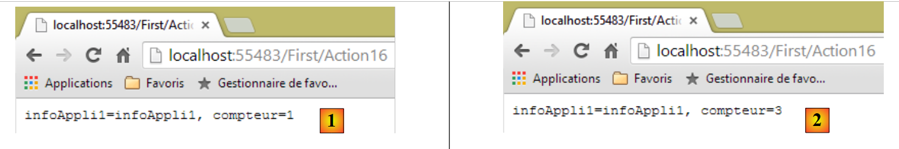 |
في [2]، أرسل العميل ثلاث طلبات إجمالاً. وفي كل مرة، تمكن من استرداد العداد الذي تم تحديثه بواسطة الطلب السابق.
لمحاكاة مستخدم ثانٍ، نستخدم متصفحًا ثانيًا لطلب نفس URL:
 |
في [3]، يسترد المستخدم الثاني بالفعل نفس معلومات النطاق [Application] ولكنه يمتلك عداد نطاق خاص به [Session].
لنعد إلى كود الإجراء [Action16]:
// Action16
public ContentResult Action16()
{
// يتم استرداد سياق الطلب HTTP
HttpContextBase contexte = ControllerContext.HttpContext;
// استرداد معلومات نطاق التطبيق
string infoAppli1 = contexte.Application["infoAppli1"] as string;
// ومعلومات نطاق الجلسة
int? compteur = contexte.Session["compteur"] as int?;
compteur++;
contexte.Session["compteur"] = compteur;
// الرد على العميل
string texte = string.Format("infoAppli1={0}, compteur={1}", infoAppli1, compteur);
return Content(texte, "text/plain", Encoding.UTF8);
}
أحد أهداف إطار العمل ASP.NET MVC هو جعل وحدات التحكم والإجراءات قابلة للاختبار بشكل منفصل دون خادم ويب. ولكن نرى في السطر 5 أن سياق الطلب HTTP ضروري لاسترداد معلومات نطاق [Application] ونطاق [Session]. نقترح إنشاء إجراء جديد [Action17] يستقبل بيانات نطاق [Application] و [Session] كمعلمات:
// Action17
public ContentResult Action17(ApplicationModel applicationData, SessionModel sessionData)
{
// يتم استرداد معلومات نطاق التطبيق
string infoAppli1 = applicationData.InfoAppli1;
// وتلك الخاصة بنطاق الجلسة
int compteur = sessionData.Compteur++;
// الرد على العميل
string texte = string.Format("infoAppli1={0}, compteur={1}", infoAppli1, compteur);
return Content(texte, "text/plain", Encoding.UTF8);
}
لم يعد الكود يعتمد على الاستعلام HTTP. وبالتالي، يمكن اختباره بشكل منفصل عن خادم الويب.
لنرى كيف يمكن تحقيق ذلك. أولاً، علينا إنشاء الفئتين [ApplicationModel] و [SessionModel] اللتين ستقومان بتغليف بيانات النطاق [Application] و [Session] على التوالي. وهما كما يلي:
 |
namespace Exemple_02.Models
{
public class ApplicationModel
{
public string InfoAppli1 { get; set; }
}
}
namespace Exemple_02.Models
{
public class SessionModel
{
public int Compteur { get; set; }
public SessionModel()
{
Compteur = 0;
}
}
}
بعد ذلك، يتعين علينا تعديل الطريقتين [Application_Start] و [Session_Start] في الملف [Global.asax]:
public class MvcApplication : System.Web.HttpApplication
{
protected void Application_Start()
{
AreaRegistration.RegisterAllAreas();
WebApiConfig.Register(GlobalConfiguration.Configuration);
FilterConfig.RegisterGlobalFilters(GlobalFilters.Filters);
RouteConfig.RegisterRoutes(RouteTable.Routes);
BundleConfig.RegisterBundles(BundleTable.Bundles);
// تهيئة التطبيق - الحالة 1
Application["infoAppli1"] = ConfigurationManager.AppSettings["infoAppli1"];
// تهيئة التطبيق - الحالة 2
ApplicationModel data=new ApplicationModel();
data.InfoAppli1=ConfigurationManager.AppSettings["infoAppli1"];
Application["data"] = data;
}
protected void Session_Start()
{
// تهيئة العداد - الحالة 1
Session["compteur"] = 0;
// تهيئة العداد - الحالة 2
Session["data"] = new SessionModel();
}
}
- السطر 14: يتم إنشاء مثيل لـ [ApplicationModel]؛
- السطر 15: يتم تهيئتها؛
- السطر 16: ووضعها في قاموس [Application]، مرتبطة بالمفتاح [data]. [Application] هي خاصية لفئة [HttpApplication] في السطر 1؛
- السطر 24: يتم إنشاء مثيل لـ [SessionModel] ووضعه في قاموس [Session]، مرتبطًا بالمفتاح [data]. [Session] هي خاصية للفئة [HttpApplication] في السطر 1؛
إذا التزمنا بما رأيناه حتى الآن، فإن التوقيع
public ContentResult Action17(ApplicationModel applicationData, SessionModel sessionData)
تعني أن الطلب HTTP الذي تعالجه الإجراء يجب أن يتضمن معلمات تسمى [applicationData] و [sessionData]. لن يكون هذا هو الحال. يجب علينا إنشاء نموذج ربط بيانات جديد بحيث عندما تتلقى إحدى الإجراءات كمعلمة نوعًا:
- [ApplicationModel]، يتم تزويدها ببيانات النطاق [Application] والمفتاح [data]؛
- [SessionModel]، شريطة تزويده ببيانات النطاق [Session] ومفتاح [data].
ولذلك، يجب إنشاء فئات تنفذ واجهة [IModelBinder].
نبدأ بإنشاء مجلد [Infrastructure] في المشروع [Exemple-02]:
 |
ننشئ فيه الفئة [ApplicationModelBinder] التالية:
using System.Web.Mvc;
namespace Exemple_02.Infrastructure
{
public class ApplicationModelBinder : IModelBinder
{
public object BindModel(ControllerContext controllerContext, ModelBindingContext bindingContext)
{
// إرجاع بيانات النطاق [Application]
return controllerContext.RequestContext.HttpContext.Application["data"];
}
}
}
- السطر 5: تنفذ الفئة واجهة [IModelBinder]. لفهم كودها، يجب معرفة أنها ستُستدعى في كل مرة يكون فيها لإجراء ما معلمة من النوع [ApplicationModel]. سيتم إجراء هذا الربط [ApplicationModel] --> [ApplicationModelBinder] عند بدء تشغيل التطبيق، في الطريقة [Application_Start] الخاصة بـ [Global.asax]؛
- السطر 7: الطريقة الوحيدة للواجهة [IModelBinder]؛
- السطر 7: يتيح لنا المعامل من النوع [ControllerContext] الوصول إلى الاستعلام HTTP قيد المعالجة؛
- السطر 7: المعلمة من النوع [ModelBindingContext] تتيح لنا الوصول إلى معلومات حول النموذج المراد إنشاؤه، وهو هنا النوع [ApplicationModel]؛
- السطر 7: نتيجة [BindModel] هي الكائن الذي سيتم تعيينه للمعلمة المرتبطة، وهي هنا معلمة من النوع [ApplicationModel]؛
- السطر 10: نكتفي بإرجاع الكائن ذي النطاق [Application] والمفتاح [data].
تتبع الفئة [SessionModelBinder] نفس المخطط:
using System.Web.Mvc;
namespace Exemple_02.Infrastructure
{
public class SessionModelBinder : IModelBinder
{
public object BindModel(ControllerContext controllerContext, ModelBindingContext bindingContext)
{
// يتم عرض بيانات النطاق [Session]
return controllerContext.HttpContext.Session["data"];
}
}
}
لم يتبق لنا سوى ربط كل نموذج من نماذج [XModel] بنموذجه binder [XModelBinder]. يتم ذلك في الطريقة [Application_Start] الخاصة بـ [Global.asax]:
protected void Application_Start()
{
....
// تهيئة التطبيق - الحالة 2
ApplicationModel data=new ApplicationModel();
data.InfoAppli1=ConfigurationManager.AppSettings["infoAppli1"];
Application["data"] = data;
// رابطات النماذج
ModelBinders.Binders.Add(typeof(ApplicationModel), new ApplicationModelBinder());
ModelBinders.Binders.Add(typeof(SessionModel), new SessionModelBinder());
}
- السطر 9: عندما يكون لإجراء ما معلمة من النوع [ApplicationModel]، سيتم استدعاء الطريقة [ApplicationModelBinder.Bind]. ومن المعروف أنها تعرض البيانات ذات النطاق [Application] المرتبطة بالمفتاح [data]؛
- السطر 10: الأمر نفسه بالنسبة للنوع [SessionModel].
لنعد إلى الإجراء [Action17]:
// الإجراء 17
public ContentResult Action17(ApplicationModel applicationData, SessionModel sessionData)
{
// يتم استرداد معلومات نطاق التطبيق
string infoAppli1 = applicationData.InfoAppli1;
// ومعلومات نطاق الجلسة
sessionData.Compteur++;
int compteur = sessionData.Compteur;
// الرد على العميل
string texte = string.Format("infoAppli1={0}, compteur={1}", infoAppli1, compteur);
return Content(texte, "text/plain", Encoding.UTF8);
}
- السطر 2: عندما يتم استدعاء [Action17]، ستتلقى
- المعلمة الأولى: بيانات النطاق [Application] المرتبطة بالمفتاح [data]،
- المعلمة الثانية: بيانات النطاق [Session] المرتبطة بالمفتاح [data]؛
يمكن أن تكون هاتان المادتان معقدتين بقدر ما نريد، ويمكن أن تجمع إحداهما جميع بيانات النطاق [Application] والأخرى جميع بيانات النطاق [Session].
فيما يلي مثال على تنفيذ الإجراء [Action17]:
 |
4.11. الربط المتأخر لنموذج الإجراء
لقد كتبنا الإجراء [Action12] التالي:
// الإجراء 12
public ContentResult Action12(ActionModel05 modèle)
{
string erreurs = getErrorMessagesFor(ModelState);
string texte = string.Format("taux={0}, erreurs={1}", modèle.Taux, erreurs);
return Content(texte, "text/plain", Encoding.UTF8);
}
بشكل مخفي، ASP.NET MVC:
- يُنشئ مثيلًا من النوع [ActionModel05] باستخدام مُنشئه بدون معلمات؛
- ويقوم بتهيئتها باستخدام معلومات الطلب التي تحمل نفس الاسم (بغض النظر عن حالة الأحرف) كأحد خصائص [ActionModel05].
في بعض الأحيان، لا يناسبنا هذا السلوك. وهذا هو الحال بشكل خاص عندما نريد استخدام منشئ معين لنموذج الإجراء. يمكننا عندئذٍ القيام بما يلي:
// الإجراء 18
public ContentResult Action18()
{
ActionModel05 modèle = new ActionModel05();
TryUpdateModel(modèle);
string erreurs = getErrorMessagesFor(ModelState);
string texte = string.Format("taux={0}, erreurs={1}", modèle.Taux, erreurs);
return Content(texte, "text/plain", Encoding.UTF8);
}
- السطر 2: لم تعد الإجراء تتلقى أي معلمات. وبالتالي، لم يعد هناك ربط تلقائي للبيانات؛
- السطر 4: نقوم بأنفسنا بإنشاء مثيل لنموذج الإجراء. وهنا يمكننا استخدام منشئ مختلف؛
- السطر 5: نقوم بتهيئة النموذج بمعلومات الطلب. يقوم ASP.NET MVC بهذه المهمة. ويقوم بها بنفس الطريقة التي كان سيقوم بها لو كان النموذج معلمة؛
- السطر 6: نحن الآن في نفس الموقف الموجود في الإجراء [Action12].
فيما يلي مثال على التنفيذ:
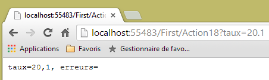 |
4.12. Conclusion
لنعد إلى بنية تطبيق ASP.NET MVC:
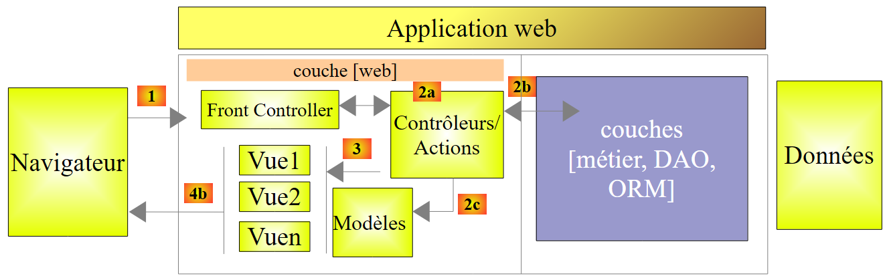 |
تحمل طلب [1] معها معلومات متنوعة التي تقدمها ASP.NET MVC إلى [2a] في شكل نموذج أطلقنا عليه اسم نموذج الإجراء.
 |
- يصل طلب العميل HTTP إلى [1]؛
- في [2]، يتم تحويل المعلومات الواردة في الطلب إلى نموذج الإجراء [3]؛
- في [4]، ستقوم الإجراء، انطلاقًا من هذا النموذج، بتوليد استجابة. وستتألف هذه الاستجابة من مكونين: عرض V [6] ونموذج M لهذا العرض [5]؛
- ستستخدم طريقة العرض V [6] نموذجها M [5] لتوليد الاستجابة HTTP الموجهة إلى العميل.
في النموذج MVC، تعد الإجراء [4] جزءًا من C (وحدة التحكم)، ونموذج العرض [5] هو M، والعرض [6] هو V.
تناول هذا الفصل آليات الربط بين المعلومات التي تنقلها الطلبات، والتي هي بطبيعتها سلاسل أحرف، ونموذج الإجراء الذي يمكن أن يكون فئة ذات خصائص من أنواع مختلفة. كما رأينا أنه من الممكن التحقق من صحة النموذج المقدم إلى الإجراء. وأخيرًا، رأينا كيفية توسيع هذا النموذج ليشمل البيانات ذات النطاق [Session] و [Application].
سنركز الآن على نهاية سلسلة معالجة الطلب [1]: إنشاء العرض [6] ونموذجه [5]. يتم إنتاج هذين العنصرين بواسطة الإجراء [4].